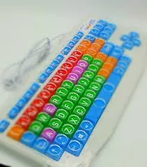
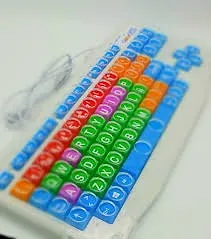

AdMouse es utilizado en Clínicas de Rehabilitación y Fisioterapia, Centros de Adultos mayores, Geriátricos, Escuelas Especiales e Instituciones Gubernamentales y son prescriptos por Especialistas en Parkinson, Fisioterapeutas, Médicos Fisiatras, Gerontólogos, Terapistas Ocupacionales y Docentes de Escuelas Especiales.
Está orientado a niños y adultos que sufren movimientos involuntarios, temblores o parálisis de miembros superiores.


 
